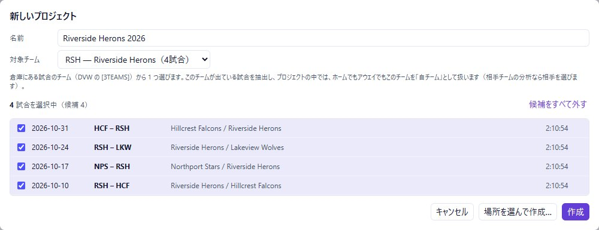
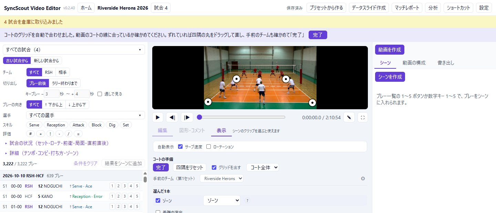
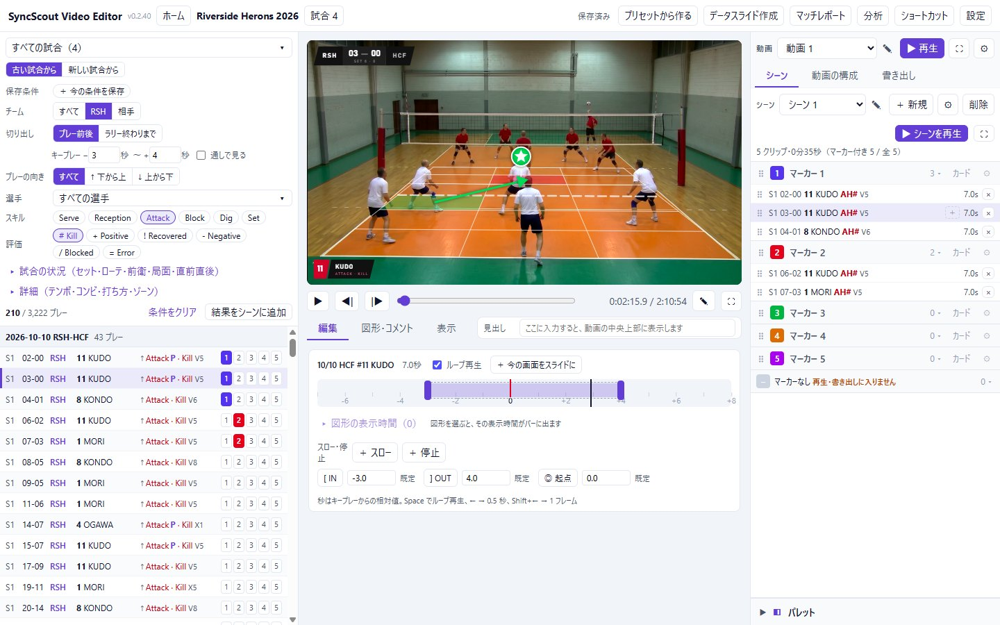

3. プロジェクトを作る
分析するチームを 1 つ決めて、そのチームの試合をまとめます。自チームの振り返りも、相手チームの分析も、チームごとにプロジェクトを作ります。
新しいプロジェクト
- ホームの新しいプロジェクトを押します。
- 名前を入れます（例：
Riverside Herons 2026）。 - 対象チームを選びます。倉庫の試合に出てくるチームから選び、そのチームが出ている試合が候補に並びます。
- 使う試合にチェックを入れます。候補をすべて選ぶで全部選べます。
- 作成を押します。プロジェクトは倉庫の中の projects フォルダにできます。別の場所に置きたいときは場所を選んで作成…を使います。

対象チームはプロジェクトの「自チーム」です
ホームでもアウェイでも、対象チームが「自チーム」になります。スコアボードの左に出て、プレー一覧の「チーム」の絞り込みでも自チームとして扱います。相手チームを分析するときは、相手を対象チームにしたプロジェクトを作ります。
あとから試合を足したり外したりするには、画面の上の試合 4 のようなボタンを押します。
コートのグリッドを確かめる
試合を初めて開くと、アプリが動画の中のコートの線を探して、グリッドを自動で合わせます。このグリッドで、ゾーンや軌道、ヒートマップを動画のコートの上に描きます。

- グリッドの四隅の丸が、エンドラインとサイドラインの交わる角に乗っているか見ます。ずれていたら丸をドラッグして直します。
- 手前のチーム（第1セット）が正しいか確かめます。カメラ側のコートにいるチームです。セットごとと、第 5 セットの 8 点でのコートチェンジは、アプリが計算します。
- 完了を押します。グリッドは試合ごとに保存され、ほかのプロジェクトでも使われます。
自動で見つからなかったときや、あとで直したいときは、動画の下の表示タブの「コートの準備」から合わせ直せます。
編集画面の見方

| 場所 | 中身 |
|---|---|
| 左 | プレーの絞り込みと、プレー一覧です。4 章で説明します。 |
| 真ん中 | 動画と、その下の 3 つのタブです。編集はクリップの範囲やスロー、図形・コメントは動画に描くもの、表示はスコアボードやコートの表示です。 |
| 右 | シーン、動画の構成、書き出しの 3 つのタブです。5 章で説明します。 |
| 上 | ホームに戻る、試合の出し入れ、プリセットから作る、データスライド、マッチレポート、分析、ショートカット、設定です。 |
キー操作の一覧は、? キーか上のショートカットで開けます。